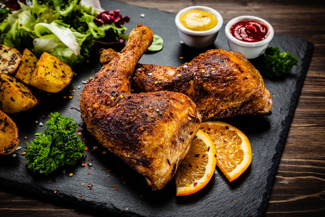

Home Page
Roasted Chicken

If you love bold flavors and crispy golden skin, this spicy roasted chicken is going to become a favorite.
It’s juicy on the inside, perfectly crisp on the outside, and coated in a smoky, slightly fiery blend of spices that wake up every bite.
The best part? It looks impressive but is surprisingly simple to make. Just rub, roast, and let the oven do the magic.
Whether you’re serving it for Sunday dinner or meal-prepping for the week, this chicken delivers big flavor with minimal effort.
Ingredients
For the Chicken:
- 1 whole chicken (about 1.5–2 kg / 3–4 lbs)
- 2 tablespoons olive oil (or melted butter)
- 1 teaspoon salt
- 1/2 easpoon black pepper
- 1 teaspoon smoked paprika
- 1 teaspoon chili powder
- 1/2-1 teaspoon cayenne pepper (adjust for heat)
- 1 teaspoon garlic powder
- 1 teaspoon onion powder
- 1 teaspoon dried thyme or oregano
- 1/2 lemon
Optional/Garnish:
- 1 Lemon (halved, for stuffing)
- 3-4 garlic cloves(smashed)
- Fresh herbs(rosemary or thyme)
Instructions
- Preheat the oven to 200°C (400°F).
- Prepare the chicken Pat the chicken dry with paper towels — this helps the skin get crispy. Place it in a roasting pan or on a baking tray.
- Make the spice rub In a small bowl, mix olive oil, salt, pepper, smoked paprika, chili powder, cayenne, garlic powder, onion powder, thyme, and lemon juice.
- Season generously Rub the spice mixture all over the chicken, including under the skin if possible. For extra flavor, stuff the cavity with lemon halves, smashed garlic, and herbs.
- Roast Roast for about 60–75 minutes, or until the internal temperature reaches 75°C (165°F) in the thickest part of the thigh. If the skin browns too quickly, loosely cover with foil.
- Rest before carving Let the chicken rest for 10–15 minutes before slicing. This keeps it juicy and flavorful.